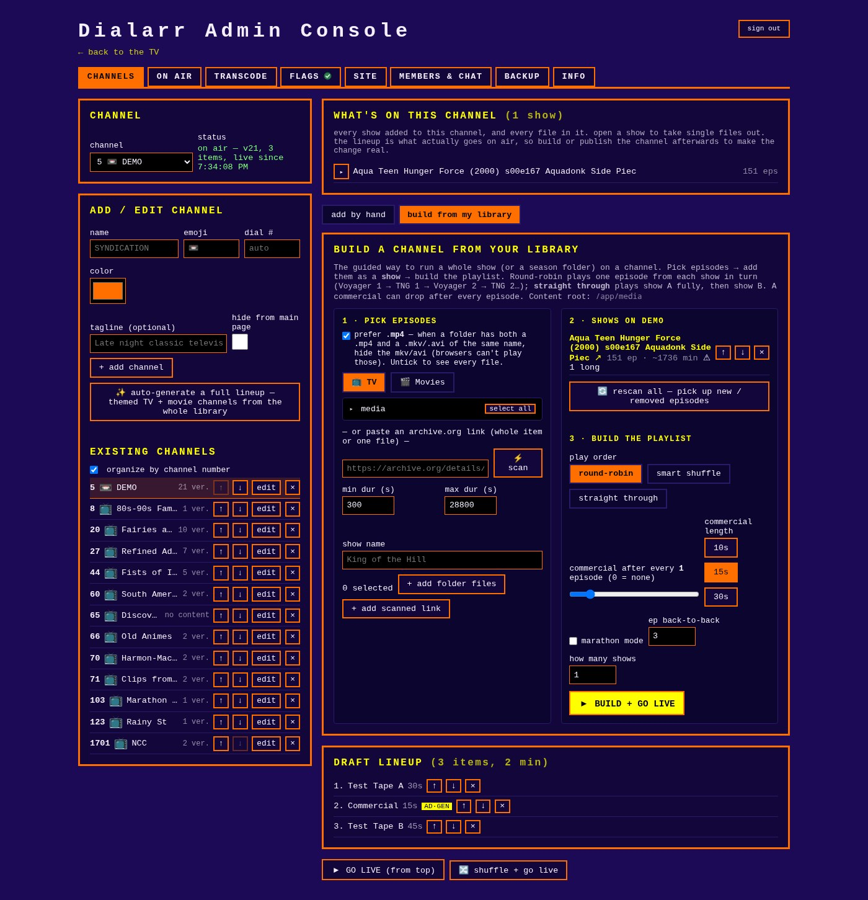

Every channel is a playlist looping from a fixed timestamp. Your browser works out what is playing from its own clock, so everyone watching sees the same second of the same film — with nothing to synchronise.
Pick a channel. Everything below moves with it.
One grid for everybody. The line is where the channel is right now — and it is in the same place on every screen in the house, because it is not sent to anyone. It is worked out from the clock.
A channel is a list of items — a title, a file, a length. Publishing it writes the list to disk and stamps the moment the loop began.
The list plays end to end and starts again, so a channel always has something on. A commercial is just an item flagged as a commercial.
Everyone works out the same position from their own clock. Nobody is told what to play, so there is nothing to keep in step — and it holds for a hundred viewers as well as one.
$ git clone https://github.com/200plat/dialarr
$ cd dialarr
$ docker compose up -d --build
then open http://localhost:3005
$ npm install && npm start # or without docker
Drop files into media/, point some at archive.org, then build a
channel in the admin console. The console is behind a password you set in the
environment.
Everything happens in the admin console, and it is eight tabs in the order you work in them. The channel list on the left, what that channel actually holds on the right. A tab for the files that will not play, with the reason and the way to fix each one. A tab for the cache, showing what is on air and what is only being kept because eviction has not got round to it yet.

The row of buttons in the corner is not a decoration bolted on — it is part of Dialarr. It is the same easter-egg layer the TV runs on: a star field, a whale, the space station going over, fireworks, a portal, a cow, and a handful of background scenes to sit behind it all.
Everything is on here by default. The eye opens and closes the bar, the gear picks which effects you want, the theatre mask makes everybody stop, the stars change the background, and the music button turns the soundtrack on. Whatever you change, it is remembered the next time you come back.
Free for personal and non-commercial use. Get in touch before using it commercially.
Source Live instance Built for friends, tapes and long nights.